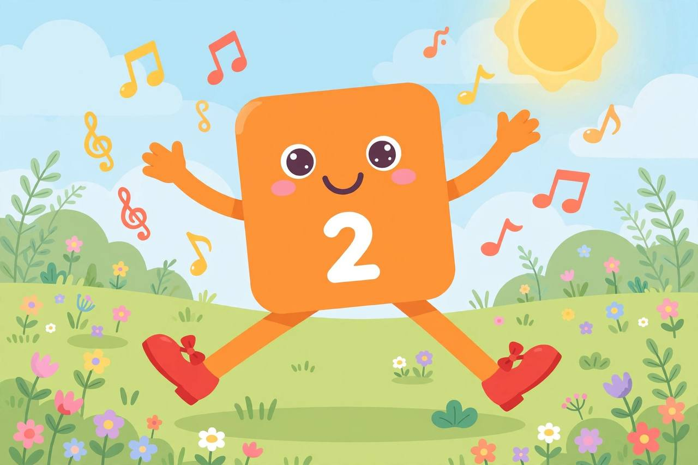
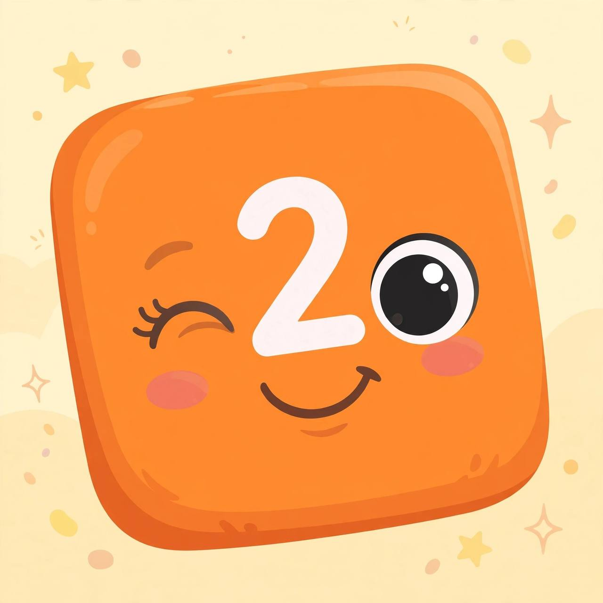

📖 剧情简介
二号登场！她最爱成双成对：两只鞋、两只眼睛！
Two arrives! She loves pairs: two shoes, two eyes!
🎭 角色
二号 Two
（数字乐园，微风轻拂 / Numberland, a gentle breeze）
2
Two二号
Hello! I'm Two!
你好！我是二号！
2
Two二号
I have two blocks! One, two!
我有两个方块！一，二！
2
Two二号
Two shoes for dancing! Left, right!
两只鞋跳舞！左，右！

Two shoes for dancing! Left, right!
2
Two二号
Two eyes for seeing! Blink, blink!
两只眼睛看东西！眨，眨！

Two eyes for seeing! Blink, blink!
2
Two二号
Everything's better in pairs!
成双成对更美好！
2
Two二号
🎵 Two, two, terrific Two!
🎵 二，二，了不起的二！
2
Two二号
🎵 One and one, that's me and you!
🎵 一加一，就是我和你！
2
Two二号
Two arms for hugging!
两只手臂抱抱！
2
Two二号
Two ears for listening!
两只耳朵听声音！
2
Two二号
Pair up, everybody! Two by two!
大家来配对！二二一组！